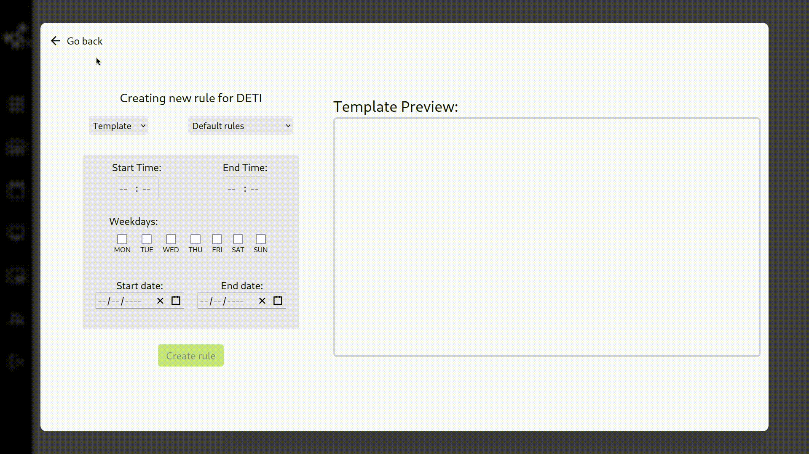

Key Concepts
To understand the different parts of our system, we first need to split it into smaller parts.
Sign in and Dashboard
Security
When first interacting with the website, you must sign in to access all the functionalities available to your role.
To do this you have two options:
- Sign in as an administrator
- Or authenticate through UA's Identity Provider (IDP) system*
This helps manage user permissions whilst making sure that it is done in a secure way. *Your IDP must be in the accepted user list.
To learn more visit the sign in section.
Monitoring information
To assist in debugging — whether caused by user actions or a monitor's malfunction — we rely on detailed logs. These logs contain information about the action, the username and its cause to provide further insights.
These logs help identify malicious activity, errors or even hardware-anomalies.
To learn more visit the dashboard section.
Media
Folders and Files
When selecting content to display on a monitor, you will need to upload the media first. This is done through Media, a virtual file system designed to manage media uploads, offering easy access and organization.
To learn more visit the media section.
Monitors
Pending and list
To display content on a monitor, the monitor must first be added to the system's monitor list. This process involves setting up the mini-computer, follow its instructions and then accepting the monitor via the frontend.
To learn more visit the monitors section.
Content Creator Tool (CCT)
This is one of the few admin specific role functionalities which is not available to anyone else.
Templates
To display content in a monitor, you must first create a template with widgets to later populate with content. These templates have CRUD functionalities.
To learn more visit the CCT section.
Schedule
Groups and Rules
To create a Rule which dictates when, how and what to show in your monitors, you must first select a group.
Finally, when a user chooses what content to be displayed on the monitor, first they must choose one of the Templates available, then select Content from Media to populate the Widgets as well as the time, day and date.

Behind the scenes, all these elements are combined into an HTML file, which the Media Player then displays.
Explanation
Group
Each monitor comes with its own default group, however to display contents it must belong to a user-created group. These groups allow the user to group different monitors and choose what is being displayed in them at the same time.
To learn more visit the group section.
Widget
To make our system customizable, the content displayed on the screen is divided into Widgets. These are HTML snippets that are able to receive variables to adjust their appearance. When a widget is placed in a template multiple values are added to it, for example, positional variables such as Top, Left, Width and Height are assigned. These variables allow easy and precise control over the exact size and position of the widget inside the template.
Additional variables can be added through the use of contents.
To learn more visit the widgets section.
Template
A template is simply a collection of widgets. The HTML of a template is created by adding up the HTML of all it's widgets.
To learn more visit the template section.
Content
Some widgets have variables inside them by default like Width and Height but some of them have some extra contents. For example, the Media and Temperature widgets shown in the gif above allow the user to choose extra information. These contents have a Type, like Media and Options, that are used decide what the user can choose for a certain widget.
To learn more visit the contents section.
Schedule
The system allows the user to choose when a certain template is going to be displayed. A Schedule stores this information.
To learn more visit the schedule section.
Rule
A Rule is a combination of multiple parts. It says what Group displays what Template at what Schedule with what Content.
To learn more visit the rule section.